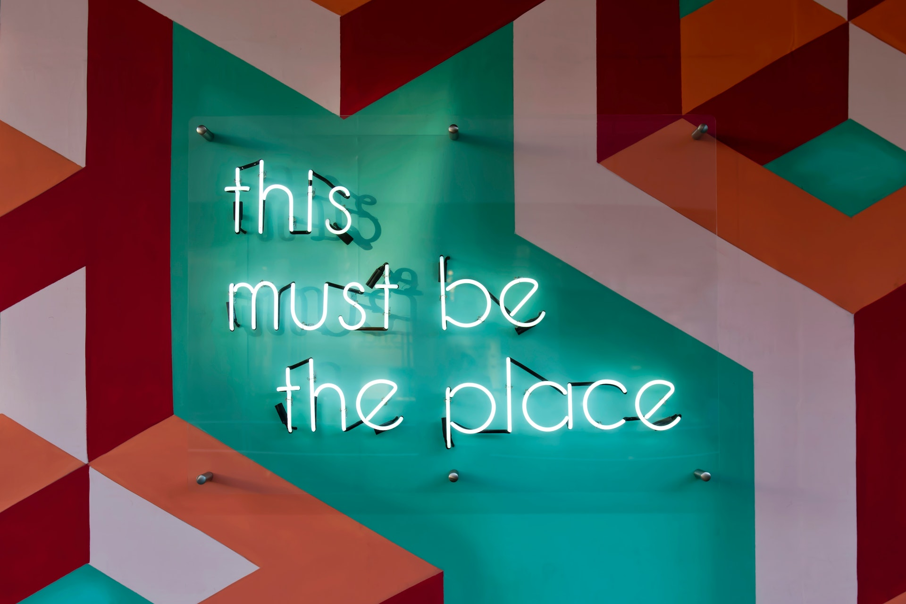

Olá, sou o Igor Desenvolvedor Fullstack!
⟴ Sobre mim
{Sou uma pessoa movida por desafios, e por este motivo decidi migrar de carreira. Possuo senioridade em Eletrônica, que é a minha formação técnica e esta me credenciou aos primeiros passos na programação, utilizando a Linguagem C, Assembly e Delphi. Retomei os meus estudos de programação com as linguagens Java e de Frontend em meados de 2021.
Sou um apaixonado por games, filmes, séries e esportes em um geral, aprecio a culinária um bom vinho e por obvio o cafezinho. Gosto de estudar diariamente, e o fato de eu ser autodidata, facilitou para que eu adquirisse este hábito. Em minha juventude já demonstrava paixão pela tecnologia e acabei me reencontrando com a programação em meados de 2021, quando iniciei um curso de Java. Meus estudos desde então, foram todos com foco na grade Fullstack.
Tenho cursos concluídos em: Java, JavaScript, HTML, CSS, MySQL. Através dos bootcamps que participei, tive um primeiro contato com: NodeJS, ReactJS, TypeScript, Git/GitHub, Scrum, GraphQL e frameworks como: Springboot, Bootstrap e Angular.
}A minha missão é: "Working from anywhere!".
